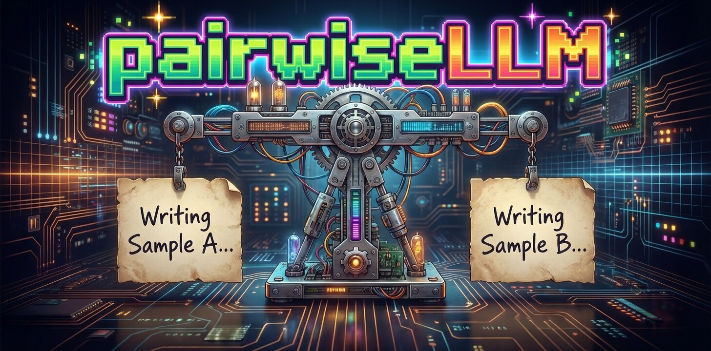

pairwiseLLM helps you compare writing samples two at a time and turn those comparisons into relative writing-quality scores. You choose the aspect of writing to assess (the trait); a large language model (LLM) judges each pair. You can also explore the analysis with the package’s bundled example results.
New here? Try the offline example below, then follow Getting Started for a step-by-step walkthrough using your own data.
Installation
Version 1.5.2 requires R >= 4.4. Install the CRAN release with:
install.packages("pairwiseLLM")For the development version on GitHub:
# install.packages("pak")
pak::pak("shmercer/pairwiseLLM")Optional tools depend on your task. The example below uses sirt for a Bradley–Terry model. Bayesian and adaptive workflows additionally need CmdStan; setup instructions are in their guides. You can prepare pairs and prompts without either modeling tool.
Try an offline example
This example uses synthetic comparison outcomes for 20 writing samples. It makes no LLM requests and needs no API key. Install its optional modeling package once:
install.packages("sirt")
library(pairwiseLLM)
data("example_writing_pairs", package = "pairwiseLLM")
# Turn the recorded winners into modeling data, then estimate relative scores.
bt_data <- build_bt_data(example_writing_pairs)
fit <- fit_bt_model(bt_data, engine = "sirt", verbose = FALSE)
scores <- fit$theta |> dplyr::arrange(dplyr::desc(theta))
head(scores, 5)
#> # A tibble: 5 × 3
#> ID theta se
#> <chr> <dbl> <dbl>
#> 1 S18 2.88 1.16
#> 2 S13 1.91 0.794
#> 3 S20 1.73 0.985
#> 4 S15 1.12 0.842
#> 5 S14 0.921 0.836There is one row per writing sample. ID identifies the sample; higher theta means stronger estimated writing on the assessed trait; se is the standard error, a measure of uncertainty in that estimate. The table is ordered from highest to lowest score. Small score differences should be considered alongside uncertainty.
These scores are relative to this set of samples. They are not rubric grades, and zero is not a pass/fail threshold. The synthetic example demonstrates the workflow; it does not validate an LLM or an assessment.
From your writing samples to scores
-
Prepare your data: one row per sample with a unique
IDand itstext. - Choose a trait: for example, overall quality or organization.
- Collect comparisons: create fixed pairs, or let adaptive pairing select the next pair as evidence accumulates.
- Inspect results and estimate scores: check failed comparisons and model diagnostics before interpreting rankings.
- If needed, calibrate to a rubric: use completed Bayesian scores and human rubric labels. Frequentist BT and Elo fits are not rubric-calibration inputs.
Cloud comparisons send your sample text and prompt to the selected provider and can incur charges. Configure only that provider’s key. The Getting Started guide walks through credentials, a small live run, failures, and saving results.
Choose your next step
| I want to… | Start with |
|---|---|
| Run my first analysis | Getting Started |
| Prepare data or change the judging instructions | Data and prompts |
| Choose comparisons as a run progresses | Adaptive pairing |
| Fit Bayesian scores to comparisons already collected | Bayesian BTL |
| Convert Bayesian scores to rubric levels | Rubric calibration |
| Place separate cohorts on a shared scale | Adaptive linking |
| Submit and resume large fixed-pair jobs | Batch workflows |
| Estimate costs or recover interrupted work | Provider controls and recovery |
Providers and optional setup
A backend is the service that runs your chosen model. Live requests return as they are processed; provider batch jobs are submitted for later retrieval. Choose according to turnaround, provider support, and workload, rather than a fixed number-of-pairs threshold.
| Backend | Service | Live | Batch | Key environment variable |
|---|---|---|---|---|
openai |
OpenAI | Yes | Yes | OPENAI_API_KEY |
anthropic |
Anthropic | Yes | Yes | ANTHROPIC_API_KEY |
gemini |
Gemini Developer API | Yes | Yes | GEMINI_API_KEY |
vertex |
Vertex AI Gemini API | Yes | No | VERTEX_API_KEY |
together |
Together.ai | Yes | No | TOGETHER_API_KEY |
ollama |
Local Ollama server | Yes | No | None |
Gemini Developer API and Vertex use separate credentials. Ollama needs a local server and model installation. Model availability and supported controls can change; see Backends and Tested Model Configurations for dated evidence and official catalogs. The package does not maintain an exhaustive model allowlist or a current pricing catalog.
All guides and statistical background
Practical guides show what to run and how to read the output. Design articles explain the estimators, selection rules, assumptions, and stopping criteria.
First steps
- Getting Started with pairwiseLLM — try an offline example, interpret scores, then collect your own comparisons.
Data, providers, and batch workflows
- Data Schemas and Prompt Management — understand data transitions and manage built-in or custom prompt templates.
- Provider Controls and Recovery — configure provider-specific controls and recover from partial or failed jobs.
- Backends and Tested Model Configurations — distinguish implemented backends, accepted identifiers, tested configurations, and availability.
- Advanced: Submitting and Polling Multiple Batches — split, submit, resume, and combine multi-batch jobs.
Adaptive ranking and linking
- Guide: Adaptive Pairing — run, inspect, save, and resume an adaptive within-set ranking.
- Guide: Adaptive Warm Start — follow an offline example from writing features through model validation and predictions to BTL/TrueSkill starting scores; compare the two ensemble approaches.
- Design: Adaptive Pairing — understand the within-set selection, refitting, and stopping design.
- Guide: Adaptive Linking — place separately ranked sets on a common scale with a practical hub-and-spoke workflow.
- Design: Adaptive Linking — understand anchored-joint estimation, candidate selection, probes, and stopping.
Modeling and bias
- Guide: Rubric Calibration — convert completed CJ results to distribution-matched levels or human rubric categories.
- Standalone Bayesian BTL with CmdStan — fit and diagnose Bayesian Bradley–Terry–Luce models outside the adaptive workflow.
- Prompt Template Positional Bias Testing — evaluate forward/reverse consistency and positional preference.
Research Studies Using pairwiseLLM
Mercer, S., & Reed, D. K. (2026). Validity of large language model comparative judgment for universal writing screening [Preprint]. EdArXiv. https://osf.io/preprints/edarxiv/4k9r8_v2
Contributing
Contributions to pairwiseLLM are very welcome!
Bug reports (with reproducible examples when possible)
Feature requests, ideas, and discussion
-
Pull requests improving:
- functionality
- documentation
- examples / vignettes
- test coverage
Backend integrations (e.g., additional LLM providers or local inference engines)
Modeling extensions
Reporting issues
If you encounter a problem:
-
Run:
devtools::session_info() -
Include:
- reproducible code
- the error message
- the model/backend involved
- your operating system
Open an issue at: https://github.com/shmercer/pairwiseLLM/issues
Package Author and Maintainer
- Sterett H. Mercer – University of British Columbia UBC Faculty Profile: https://ecps.educ.ubc.ca/sterett-h-mercer/ ResearchGate: https://www.researchgate.net/profile/Sterett_Mercer Google Scholar: https://scholar.google.ca/citations?user=YJg4svsAAAAJ&hl=en
Citation
Mercer, S. H. (2026). pairwiseLLM: Pairwise writing quality comparisons with large language models (Version 1.5.2) [R package; Computer software]. https://github.com/shmercer/pairwiseLLM